SPHEREx Blink
Five targets · saved GIF gallery
Test objects...
WISE 0855
Field of view (arcmin)
Detector
1
2
3
4
5
6
Image source
Latest IRSA
Saved observations · 15 Nov 2026
Share or embed this view
View URL
Embed HTML
← Previous date
Play
Next date →
Speed
Synthetic demonstration data — not SPHEREx observations.
How positions are measured
Show flags
Show expected position
Show centroid / candidates
Spectrum
Light curve
Show preliminary and rejected measurements